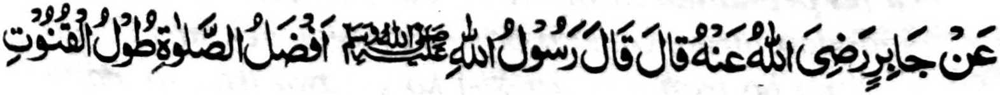
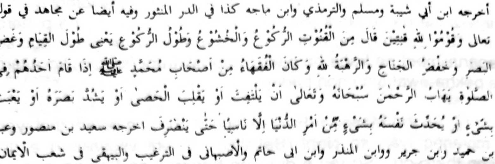
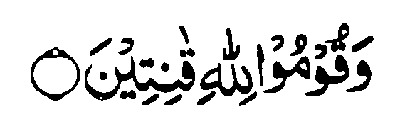
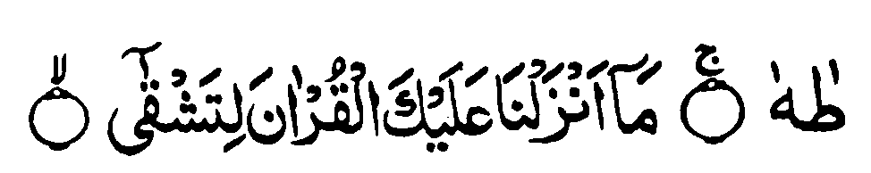
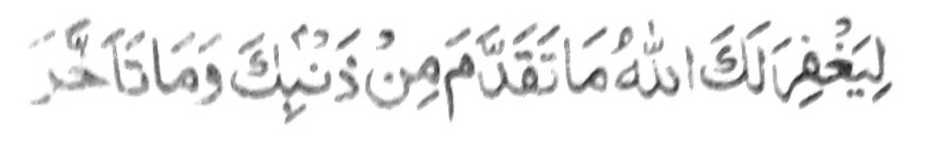

So Jabir na pitharo iyan a pitharo o Rasulollah (Sallallaho Alaihi Wasallam), Aya makalelebi a Sambayang na so matas so Raka'at." (Piyakaliyo o Ibn Abi Shaibah go so Moslim go so Tirmidhie go so Ibno Majah lagido a kapapadalem iyan ko Ad-Dorril Manthoor a madadalemon pen a: Go so Mujahid na si-i ko katharo o Allah,

"Go pamayandegen niyo (so Sambayang) a rek o Allah sa titho a kapephangongonotan niyo." na pitharo iyan, 'Ped ko Qunot (kapangongonotan) so Ruku a ndodon so gi-i ron kaphiya-piya-i go so kalendo o Ruku na aya ma-ana niyan na na so kalendo o katitindeg (ko raka-at) go so kibaba-an ko kailay go so kibaba-an ko waga go so kathapapay ko Allah. Go aya betad o manga ala-i sabot ko manga bolayoka o Muhammad (Sallallaho Alaihi Wasallam) na Igira tomitindeg so isa kiran si-i ko Sambayang na ika-alek iran so (Allah a) Masalinggagao (Subhaanaho Wa Ta’ala) oba siran pephaniri-siri o di na pephantaren niran so manga wator ko darpa a sododan niran, o di na basiran nggalebek sa salakao o di na ba iran mapikir si-i ko ginawa iran so maito bo a nganin a maka-antap ko manga galebek sa doniya inonta sa mokit sa kalipat. "
Madakel a initapsir sangkanan a katharo a ’Qunur a miyatago sa Qur'an a miya aloy sangka iya Hadith. So isa a initapsir ron, na so 'Qunut* na aya ma ana niyan na da a katharo. Si-i ko paganay pen so Islam na, na khapakay so katharo o di na sembagen ta so Salaam igira gi-i ta Zambayang, ogaid na soden so kinitoron angka-iya a Ayaat na so katharo ko Sambayang na inisapar. So Ibn Mas’od (Radhiallaho 'Anho) na pitharo iyan, "Isako paganay na igira mimbisita ko so Rasulollah (Sallallaho 'Alaihi Wasallam), na pezalamen naken a 'Assalaamo 'Alaikom' na pezembagen niyan a Wa 'Alaikom-us-Salaam' apiya igira gi-i sekaniyan Zambayang. Miyaka-isa na pimbisita ko sekaniyan na kapapantagan a gi-i sekaniyan Zambayang na siyalam aken na da sekaniyan sembag. Tanto ako a miyalek, ka inikalek aken a oba baden giyangkoto a pinggola-ola niyan raken na ba pho-on sa aden a da raken kaso-aten o Allah. Mbaram-barang den a miyalalagoy sa pamikiran aken. Isa pen a miyapikir aken na banda ko baden pekhararangiti o Nabi (Sallallaho 'Alaihi Wasallam) na oriyan niyan na mbaram-barang den a osayan a rata a ginawa a khapikir aken. Kagiya makapasad Zambayang so Rasulollah (Sallallaho 'Alaihi Wasallam) na pitharo iyan, 'So Allah na phemansoken Niyan so sogo-an Niyan ko kabaya Iyan. Imanto na inisapar Iyan so katharo (sa salakao) igira masa a kazambayang.' Oriyan niyan biyatiya iyan angkoto a Ayaat, 'Go pamayandegen niyo (so Sambayang) a rek o Allah sa titho a kapephangongonotan niyo.' (Soorah Al-Baqarah:238) na oriyan niyan na pitharo iyan, ''Imanto na so Sambayang na tolabos a iphepodi-podi ko Kaporo ago Banto-gan ago Kasosoti o Allah”'.
So Muawiah bin Hakim Salmi (Radhiallaho 'Anto) na pitharo iyan, "Kagiya mbisita ko sa Madina ka zoIed ako ko Islam, na madakel a inipangenda-o raken. Isa on so kapetharo ako ko 'Yarhamokallah' igira aden a miyakam-baan a pitharo iyan so 'Alhamdo Lillah’. Sabap sa bago ako ko Islam, na diyaken katawan a diyoto khapakay igira gi-i ta Zambayang. Miyaka-isa na gi-i kami Zambayang na aden a miyakamba-an Pitharo aken sa matanog so ’Yarhamokallah’. Omani isa na tintengan ako iran. Sabap sa diyaken katawan a di khapakay so katharo igira Sambayang, na pitharo aken, ‘Ino ako niyo
phagilaya sa masarangit?' Pithiniyasan ako iran na ogaid na dako sabota na miyapikir aken a gomonek ako tharo. Kagiya mapasad so Sambayang na tiyalowan ako o Nabi (Sallallaho Alaihi Wasallam). Na da ko niyan peranega ago da ko niyan mbongeti go da ko niyan perarasenga. Ba niyan den pitharo Iyan, Di khapakay so katharo (sa salakao) igira Sambayang. So Sambayang na masa a iphodi ko Kaporo ago so Bantogan o Allah ago so kabatiya-a ko Qur'an.' Ibet ko Allah ka dako pen makato-on ko mona-pona ago si-i ko mori-pori, sa guro a mala-i gagao a lagid o Nabi (Sallallaho 'Alaihi Wasallam).
lsa pen a tapsir a inibegay o Ibn Abbas (Radhiallaho ’Anho) na pitharo iyan a so 'Qunut' na kambayorantang. Giyangkanan a katharo o Mujahid a miya-aloy na giya-i kaphapasodan iyan a tapsir. So Abdullah Ibn Abbas (Radhiallaho ’Anho) na pitharo iyan, "Si-i ko paganay, na so Nabi (Sallallaho 'Alaihi Wasallam) na phagiketan niyan a lawas iyan a tali igira gi-i Tahajjud, ka aden di thoroga. Misabap si-i a kinitoron o Ayaat sa Qur'an:

"Ta Ha. Kena ba aya kinitoronen Nami reka (Ya Muhammad) ko Qur'an na angka makandamar." [Soorah: Ta Ha: 1-2]
Miyapanothol ko madakel a Hadith a so manga a-i o Nabi (Sallallaho 'Alaihi Wasallam) na pembetowan sabap ko kathay a katitindeg iyan igira gi-i Tahajjud. Sabap ko gagao niyan ago babaya iyan ko manga Ummat iyan, na iniwasiyat iyan kiran so kathangka-a iran ko simba iran, ka oba baden so kitaralo niyan na ba makasilay (so tao). Giyoto i sabap a siyaparan niyan so sakatao a ba-i a i-iketan niyan a ginawa niyan ka aden di thoroga igira gi-i Zambayang.
Tanodan tano a so Sambayang a matas i rak'at na lebi a mapiya ago lebi a mala-i balas, asar ka di mitaralo. Aya osto na aden a ma-ana o gi-i kapanambayang o Nabi (Sallallaho 'Alaihi Wasallam) sa manga atas a Sambayang taman sa pembetowan so manga a-i niyan. Kagiya pangeni non o manga Sahabah niyan a kekesi niyan so gi-i niyan kapelogat ko simba, sabap sa piyakasarig sekaniyan a kiyarila-an sekaniyan si-i ko Soorah Al-Fath:

"Ka kagiya penapin reka o Allah so miya-ona dosa ngka go so miya-ori." [Soorah Al-Fath:2]
Miya-aloy sa Hadith a igira gi-i zambayang so Nabi (Sallallaho 'Alaihi Wasallam), na so rareb Iyan na lalayon perakhorob sa aya den a lagid iyan na so galingan. Si-i ko isa pen a Hadith, na so dagedeb iyan na datar o kapendidi o kendi. So Ali (Radhiallaho 'Anho) na piyanothol iyan, "Si-i ko gagawi-i o kapethidawa sa Badr, na miya-ilay aken so Nabi (Sallallaho 'Alaihi Wasallam) a tomitindeg ko atag a kayo, a gi-i Zambayang ago penggora-ok si-i ko Allah sa miyababasa gawi-i taman si-i ko kapekhapita iyan." Miya-aloy ko pimbarang a manga Hadith, "So Allah na tanto a masoso-at ko saba-ad a manga tao na isa on so tao a inawa-an niyan so iga-an niyan a ipererembang iyan non so pekhababaya-an niyan ago mata-id a karoma niyan ka baden mizambayang sa Tahajjud ko masa a panenggao a gagawi-i. So Allah na tanto rekaniyan e masoso-at, ago ipephangandag Iyan, ago minsan pen katawan Niyan sa tarotop na iphagiza Iyan ko manga Mala-ikat, 'Antona-a i miyakasogo ko oripen Aken sa ka-awa-i niyan ko iga-an niyan na tominindeg sa lagida-i? Isembag o manga Mala-ikat, "Arap iyan sa makowa niyan so limo ago gagao ngKa, ago kalek iyan ko di ngKa kasoso-at." Sabap ro-o na tharo-on o Allah, "Pamakinega niyo! Imbegay Aken non so i-inamen niyan go pelindingen Aken ko ipekhalek iyan."
So Nabi (Sallallaho 'Alaihi Wasallam) na pitharo iyan, "Dapen a tao a makakowa sa mapiya balas ko Allah a ba niyan kalawani so tao a - miyakazambayang sa dowa rak'at a Sambayang"
Miya-aloy sa Qur'an ago sa Hadith a so manga Mala-ikat na tatap siran sa simba. Aden a saba-ad a tatap si-i sa Ruku ago aden a saba-ad a tatap sa Sajdah sa dayon sa dayon. Tinimo o Allah langon angkanan a mambebetad o manga Mala-ikat si-i ko Sambayang, ka antano makasapari ko omani pimbarang a simba iran. So kapembatiya-a ko Qur'an si-i ko Sambayang na aya minilawan ko simba iran. Oway den ka so Sambayang na miyarangkom iyan so langon o sosonan o simba o manga Mala-ikat, ogaid na aya lebi a mapiya na opama ka so Sambayang na aya mamayandegon na so tao a aya dadabi-atan niyan na lagid o paparangayan o manga Mala-ikat. Giyoto i sabap a so Nabi (Sallallaho 'Alaihi Wasallam) na pitharo iyan, "Para ko (ikapiya o) Sambayang, na tatapa niyo a makhap so manga likod iyo ago so tiyan niyo." So likod o tao na makhap amay ka da-a bayadan niyan, go so tiyan niyan na makhap amay ka koman so tao sa mathangka ka aniyan kalidasi so bokel ago toratod a aya onga o kabosao.